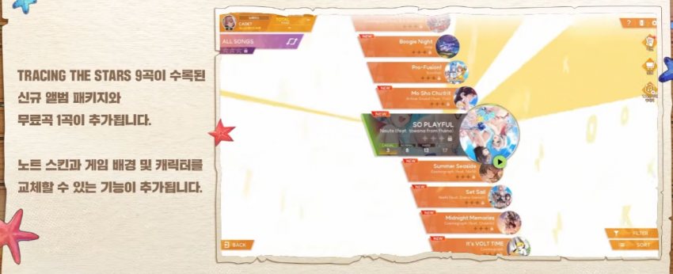

Mo Sho Chu는 이번 말차 캐릭터송
Pro-Fusion
https://www.youtube.com/watch?v=E1sSRqlDUqo
SO PLAYFUL
https://www.youtube.com/watch?v=3MAfSQe1Gx0
Summer Seaside
https://www.youtube.com/watch?v=zU4hjekwh-c
Set Sail
https://www.youtube.com/watch?v=gDEcZsuHRM8
Midnight Memories
https://www.youtube.com/watch?v=vgPbpJx0UZ0
It's VOLT TIME
https://www.youtube.com/watch?v=gSEBWXT4-sE
이렇게랑 3곡 더 나올듯
다 여름이벤인거 보면 나머지 3곡도 여름이벤 곡일지도?
It's VOLT TIME은 이번에 처음 알았는데 좋넹